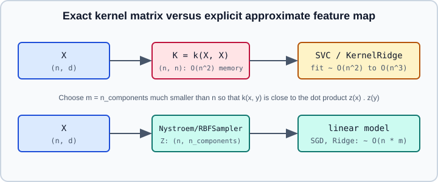

Kernel Ridge, Kernel Approximation & Nyström
|
This content was generated with the assistance of AI and should be verified against the official documentation before being relied on in production. |
A kernel method lets a linear algorithm learn a non-linear function by working with a similarity function \(k(x, x')\) instead of explicit features. scikit-learn offers it in three ways: classical estimators with a kernel argument (SVC, SVR, KernelRidge, KernelPCA, GaussianProcessRegressor), a library of kernel functions in sklearn.metrics.pairwise, and approximation transformers in sklearn.kernel_approximation that turn a kernel method into a linear model on new features. This page covers KernelRidge, the kernels, and the approximations; support vector machines are in Support Vector Machines in scikit-learn and Gaussian processes in Gaussian Processes.
Examples were run on Python 3.13 with scikit-learn 1.9.1 on 2026-10-31. Timings quoted come from that run and vary by machine.
The kernel trick in one paragraph
A kernel is a function \(k(x, x') = \langle \phi(x), \phi(x')\rangle\) equal to a dot product in some feature space \(\phi\), possibly infinite dimensional. A model whose prediction can be written with training points only through dot products can use \(k\) in their place and never compute \(\phi\). The price: it must keep and operate on the \(n \times n\) kernel matrix \(K_{ij} = k(x_i, x_j)\), so memory grows as \(n^2\) and training time between \(n^2\) and \(n^3\). That is the cost the approximations below try to avoid. The theory is in the SVM chapter of most textbooks; here only scikit-learn behaviour is covered.

Kernel functions
The kernels most estimators accept as kernel="..." are linear, poly, rbf, sigmoid, laplacian and chi2 (plus cosine and additive_chi2 in pairwise_kernels). With \(\gamma\) as gamma, \(c_0\) as coef0 and \(d\) as degree:
| Kernel | Formula |
|---|---|
|
\(k(x, y) = x^\top y\) |
|
\(k(x, y) = (\gamma\, x^\top y + c_0)^d\) |
|
\(k(x, y) = \exp(-\gamma \lVert x - y\rVert^2)\) |
|
\(k(x, y) = \exp(-\gamma \lVert x - y\rVert_1)\) |
|
\(k(x, y) = \tanh(\gamma\, x^\top y + c_0)\) |
|
\(k(x, y) = \exp\left(-\gamma \sum_i \frac{(x_i - y_i)^2}{x_i + y_i}\right)\) for non-negative features such as histograms |
Practical points that cause most problems:
-
Scale the features first. RBF, Laplacian and polynomial kernels depend on distances or dot products, so one large-range feature dominates (see Scaling & Transforming Features).
-
gammais the first hyperparameter to tune. A large \(\gamma\) makes a very local, wiggly function (overfitting); a small one approaches a linear model. Tune it on a logarithmic grid together with the regularisation strength (see Grid, Randomized & Halving Search). -
Precomputed kernels. Pass
kernel="precomputed"and a square kernel matrix when you have a custom similarity (strings, graphs, a domain specific distance). At prediction time pass the kernel between the new points and the training points, shape(n_new, n_train). -
Custom
kernelparameters can be given toKernelRidgethroughkernel_paramswhen the kernel is a callable.
The functions behind these are in sklearn.metrics.pairwise: rbf_kernel, polynomial_kernel, linear_kernel, laplacian_kernel, sigmoid_kernel, chi2_kernel, cosine_similarity, and the dispatcher pairwise_kernels(X, Y, metric=..., **params). Distances such as euclidean_distances and pairwise_distances live in the same module; they are also what nearest-neighbour estimators use (see Nearest Neighbors).
KernelRidge
KernelRidge combines ridge regression (squared error loss with an L2 penalty; see Linear Models and Logistic Regression in scikit-learn) with the kernel trick. It solves
\[ \min_f \sum_{i=1}^{n} \left(y_i - f(x_i)\right)^2 + \alpha \lVert f\rVert^2_{\mathcal{H}} \]
in closed form, giving \(f(x) = \sum_i a_i\, k(x, x_i)\) with dual coefficients \(a = (K + \alpha I)^{-1} y\).
Constructor arguments: alpha (regularisation strength, default 1; larger means smoother), kernel (default linear), gamma, degree, coef0 and kernel_params. After fit: dual_coef_ (the \(a_i\), shape (n,) or (n, n_targets)) and X_fit_ (the training data it must keep for prediction). It supports multi-output targets and sample_weight in fit. There is no intercept parameter: the model has no separate bias, so centre y (or wrap with TransformedTargetRegressor) when the target mean is far from zero.
import numpy as np
from sklearn.kernel_ridge import KernelRidge
from sklearn.metrics.pairwise import pairwise_kernels, rbf_kernel
rng = np.random.RandomState(0)
X = rng.uniform(-3, 3, size=(200, 1))
y = np.sin(X).ravel() + 0.1 * rng.randn(200)
X_new = rng.uniform(-3, 3, size=(50, 1))
# 1. kernel given by name
model = KernelRidge(alpha=0.1, kernel="rbf", gamma=0.5).fit(X, y)
# 2. the same model from an explicit kernel matrix
K = rbf_kernel(X, X, gamma=0.5)
pre = KernelRidge(alpha=0.1, kernel="precomputed").fit(K, y)
K_new = pairwise_kernels(X_new, X, metric="rbf", gamma=0.5) # shape (50, 200)
print("max difference:", np.abs(model.predict(X_new) - pre.predict(K_new)).max())
print("dual_coef_:", model.dual_coef_.shape, "X_fit_:", model.X_fit_.shape)The two models gave identical predictions (maximum difference 0.0), dual_coef_ had shape (200,) and X_fit_ (200, 1).
Kernel ridge versus SVR
KernelRidge and SVR learn the same kind of model, with different loss functions. The user guide states the differences:
| KernelRidge | SVR | |
|---|---|---|
Loss |
squared error |
epsilon-insensitive |
Model |
non-sparse: all training points contribute |
sparse when epsilon is greater than 0: only the support vectors |
Fit |
closed form, \(O(n^3)\) in general; the guide reports it faster for medium-sized training sets (under about 1000 samples in its example) |
an iterative solver; scales better for larger training sets, per the guide |
Predict |
slower: cost grows with all \(n\) training points |
faster, because of the sparse solution |
The guide’s example reports a fit about seven times faster for kernel ridge with grid search and a prediction more than three times faster for SVR. With 1000 samples of a noisy sine curve and a 5-fold grid search, the following code reproduced the fit-speed advantage (the full grid search took about 0.7 to 0.9 s for KernelRidge and 2.1 to 2.7 s for SVR) but not the prediction-speed one (about 3 ms for KernelRidge and 4 to 6 ms for SVR on 500 points), while SVR kept 312 of 1000 points as support vectors and KernelRidge kept all 1000. Treat the speed claims as dependent on data size, grid and hardware, and measure on your own problem.
from time import perf_counter
import numpy as np
from sklearn.kernel_ridge import KernelRidge
from sklearn.model_selection import GridSearchCV
from sklearn.svm import SVR
rng = np.random.RandomState(42)
X = 5 * rng.rand(1000, 1)
y = np.sin(X).ravel()
y[::5] += 3 * (0.5 - rng.rand(X.shape[0] // 5)) # outliers on every fifth point
X_plot = np.linspace(0, 5, 500)[:, None]
searches = {
"KernelRidge": GridSearchCV(KernelRidge(kernel="rbf"), {"alpha": [1e0, 1e-1, 1e-2], "gamma": np.logspace(-2, 2, 5)}, cv=5),
"SVR": GridSearchCV(SVR(kernel="rbf"), {"C": [1e0, 1e1, 1e2], "gamma": np.logspace(-2, 2, 5)}, cv=5),
}
for name, search in searches.items():
start = perf_counter()
search.fit(X, y)
fit_time = perf_counter() - start
start = perf_counter()
search.predict(X_plot)
print(f"{name}: {search.best_params_} fit {fit_time:.2f}s predict {(perf_counter() - start) * 1e3:.1f}ms")
print("SVR support vectors:", searches["SVR"].best_estimator_.support_.shape[0], "of", len(X))Source: https://scikit-learn.org/stable/auto_examples/miscellaneous/plot_kernel_ridge_regression.html
Because of the squared loss, KernelRidge is more sensitive to outliers than SVR; the contaminated target above is the reason for that choice. KernelRidge also has no probabilistic output; for predictive uncertainty see Gaussian Processes, which share the same closed form for the mean.
Kernel approximation
When \(n\) is large, an exact kernel method is too expensive. The idea of sklearn.kernel_approximation is to compute an explicit, finite feature map \(z(x) \in \mathbb{R}^m\) such that \(k(x, y) \approx z(x)^\top z(y)\), and then to fit a linear model on \(z(x)\). Training then scales roughly linearly in \(n\), prediction needs only \(m\) features and the fitted linear weights, and the models can be trained incrementally with SGDClassifier or SGDRegressor (see Performance and Parallelism in scikit-learn).
| Transformer | Approximates | How and when |
|---|---|---|
|
any kernel (default |
Samples |
|
RBF kernel |
Random Fourier features ("random kitchen sinks"), Monte Carlo sampling. Its |
|
skewed chi-squared kernel |
Monte Carlo sampling, like |
|
additive chi-squared kernel |
Deterministic, with |
|
polynomial kernel with |
TensorSketch (count sketch plus FFT). Data independent and scalable. |
Common rules:
-
The number of output features is
n_components(exceptAdditiveChi2Sampler). More components give a better approximation and slower training; the right value is found empirically, by watching validation score againstn_components. -
Fit these transformers inside a
Pipelineso that cross-validation fits them only on training data (see Pipelines). -
The user guide notes that empirical work on the quality of approximate embeddings is limited, so compare with the exact kernel method when you can.
from time import perf_counter
from sklearn.datasets import load_digits
from sklearn.kernel_approximation import Nystroem, RBFSampler
from sklearn.linear_model import SGDClassifier
from sklearn.model_selection import train_test_split
from sklearn.pipeline import make_pipeline
from sklearn.svm import SVC
X, y = load_digits(return_X_y=True)
X_train, X_test, y_train, y_test = train_test_split(X / 16.0, y, stratify=y, random_state=0)
gamma = 0.02
models = {
"SVC rbf (exact)": SVC(kernel="rbf", gamma=gamma),
"Nystroem(200) + SGD": make_pipeline(Nystroem(gamma=gamma, n_components=200, random_state=0), SGDClassifier(random_state=0)),
"RBFSampler(500) + SGD": make_pipeline(RBFSampler(gamma=gamma, n_components=500, random_state=0), SGDClassifier(random_state=0)),
"linear SGD": SGDClassifier(random_state=0),
}
for name, model in models.items():
start = perf_counter()
model.fit(X_train, y_train)
print(f"{name:22s} accuracy {model.score(X_test, y_test):.3f} fit {(perf_counter() - start) * 1e3:.0f} ms")This printed accuracies of 0.962 (exact SVC), 0.960 (Nystroem), 0.958 (RBFSampler) and 0.942 (linear SGD). With only 1347 training samples the exact SVC was faster to fit than the approximations (about 50 to 60 ms against roughly 80 ms for Nystroem and 170 to 190 ms for RBFSampler), which is the expected result: approximations pay off for large \(n\), not for small data sets like this one.
A second sketch shows how the accuracy of Nystroem with a ridge regression follows n_components, against the exact KernelRidge:
import numpy as np
from sklearn.kernel_approximation import Nystroem
from sklearn.kernel_ridge import KernelRidge
from sklearn.linear_model import Ridge
from sklearn.metrics import r2_score
from sklearn.model_selection import train_test_split
rng = np.random.RandomState(0)
X = rng.uniform(-3, 3, size=(4000, 3))
y = np.sin(X[:, 0]) * np.cos(X[:, 1]) + X[:, 2] ** 2 / 4 + 0.1 * rng.randn(4000)
X_train, X_test, y_train, y_test = train_test_split(X, y, random_state=0)
exact = KernelRidge(alpha=0.1, kernel="rbf", gamma=0.3).fit(X_train, y_train)
print("exact KernelRidge R2:", round(r2_score(y_test, exact.predict(X_test)), 3))
for m in (20, 100, 300):
nystroem = Nystroem(kernel="rbf", gamma=0.3, n_components=m, random_state=0)
ridge = Ridge(alpha=0.1).fit(nystroem.fit_transform(X_train), y_train)
print(m, "components, R2:", round(r2_score(y_test, ridge.predict(nystroem.transform(X_test))), 3))The exact model reached \(R^2\) of 0.983 and the approximations 0.423, 0.973 and 0.984 for 20, 100 and 300 components: too few components underfit badly, and a few hundred are enough to match the exact kernel on this problem.
PolynomialCountSketch and AdditiveChi2Sampler follow the same fit_transform pattern. For example, PolynomialCountSketch(degree=2, n_components=300, random_state=0) followed by SGDClassifier(random_state=0) gave an accuracy of 0.982 on the scaled digits data split as above, and AdditiveChi2Sampler(sample_steps=2) turned 64 features into 192, as the formula \(2n+1\) per feature predicts.
Choosing between the options
-
Small to medium \(n\) (up to about ten thousand): the exact
SVC/SVRorKernelRidgewith tunedgammais the baseline. See Support Vector Machines in scikit-learn. -
Large \(n\), non-linear structure:
Nystroem(best accuracy per component) orRBFSampler(cheapest) plus a linear model; tunen_components. -
Streaming or out-of-core: approximations plus
SGDClassifier.partial_fit;Nystroemmust see a representative sample first. -
Need uncertainty: Gaussian processes (see Gaussian Processes).
-
Tabular data in general: gradient boosting is usually the strongest and simplest default (see Gradient Boosting & HistGradientBoosting); and when you also want a learned, deep feature map, see Neural Networks: MLPClassifier & MLPRegressor and From scikit-learn to Deep Learning.
Kernels also appear elsewhere: KernelPCA in PCA, TruncatedSVD & NMF, spectral clustering with an affinity kernel in Clustering, and attention can be viewed as a learned kernel (see Attention & Transformers).